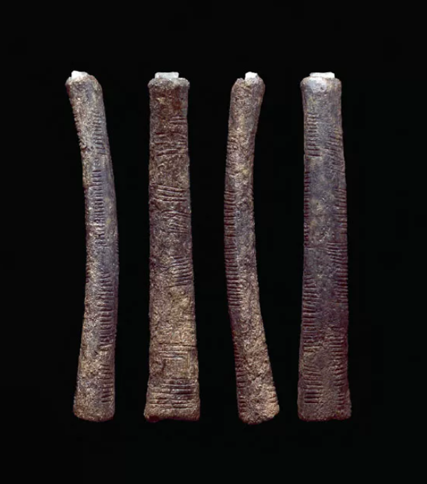
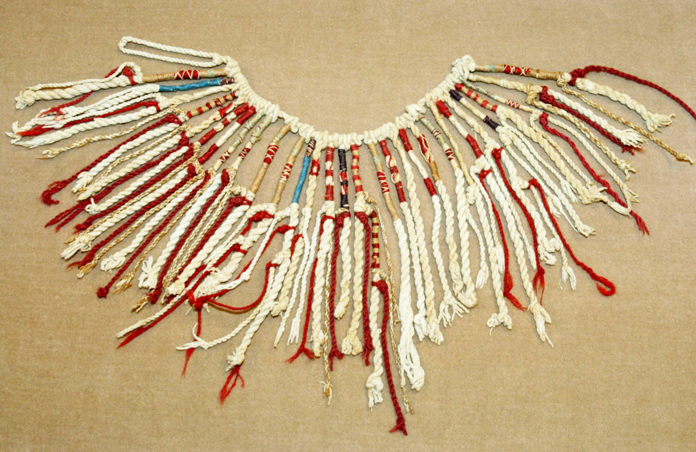
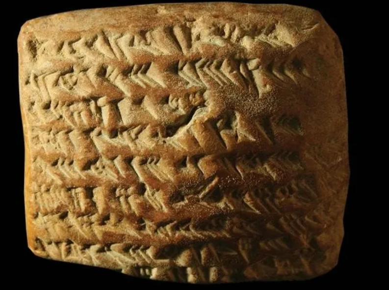
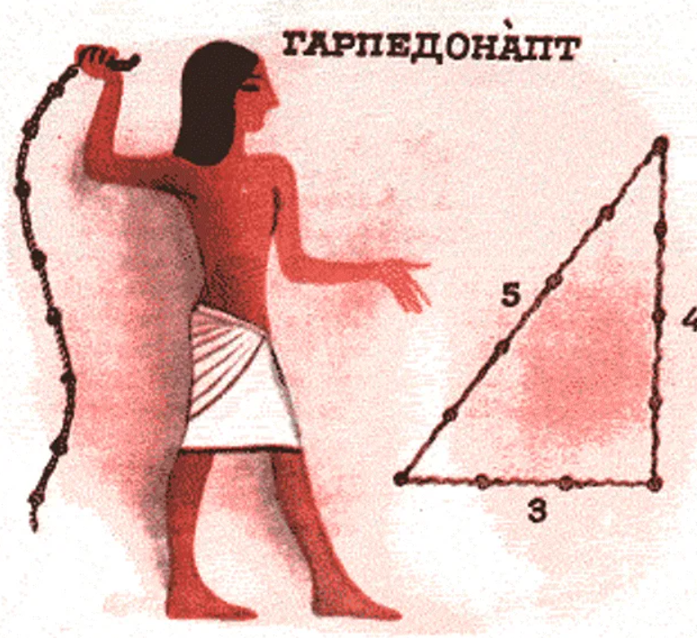
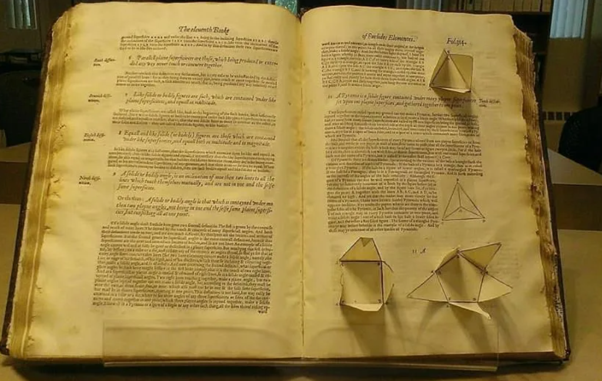

Натуральные числа и первые системы счёта
Развитие понятия числа началось с практических потребностей учёта ресурсов. Первобытные люди использовали конкретные предметы для счёта: пальцы, камешки, зарубки на костях и деревьях. Одним из древнейших артефактов является кость Ишанго (20 000 лет до н.э.), содержащая зарубки, которые, возможно, отражают лунный календарь или математические вычисления. С развитием цивилизаций появились более сложные системы: египтяне использовали иероглифы для обозначения степеней числа 10, шумеры разработали клинописные знаки для чисел в шестидесятеричной системе. Важным этапом стало отделение числового понятия от конкретных объектов - переход от "пяти овец" к абстрактному "пяти". Этот процесс занял тысячелетия и отразился в языковых структурах многих народов.
Развитие систем счисления и письменной записи чисел
По мере усложнения хозяйственной деятельности простого счёта стало недостаточно. Разные цивилизации разрабатывали свои системы счисления, часто основанные на анатомических особенностях (10 пальцев) или астрономических наблюдениях. Десятичная система стала доминирующей, но существовали и альтернативы: вавилоняне использовали шестидесятеричную систему для астрономических расчётов, майя - двадцатеричную с включением нуля. Особый интерес представляет кипу инков - узелковая письменность, где цвет, тип и положение узелков кодировали числовую информацию. В древнем Китае использовали счётные палочки, которые позволяли выполнять сложные вычисления. Развитие письменности привело к появлению специальных символов для чисел, что значительно ускорило математический прогресс.
Возникновение арифметических операций
Потребности повседневной жизни привели к формированию основных арифметических действий. Сложение и вычитание появились первыми как отражение процессов объединения и разделения предметов. Умножение возникло как способ быстрого сложения одинаковых чисел - вавилонские глиняные таблички содержат таблицы умножения ещё за 2000 лет до н.э. Деление развилось позднее, особенно сложным было деление на неравные части. Интересно, что древние египтяне использовали только дроби с единицей в числителе, что значительно усложняло вычисления. Геометрические задачи о разделе земли после разливов Нила стимулировали развитие дробей. Вавилоняне уже использовали позиционную систему записи чисел, что позволяло им выполнять сложные алгебраические вычисления.
Геометрические абстракции и измерения
Практические задачи измерения земли и строительства привели к развитию геометрии. Древние египтяне использовали верёвки с узлами для построения прямых углов (прообраз теоремы Пифагора). Греки систематизировали эти знания, введя строгие доказательства. Любопытно, что многие геометрические термины происходят от бытовых предметов: "ромб" - от волчка, "трапеция" - от стола. Первые попытки вычисления площадей часто были ошибочными - например, считалось, что фигуры с равными периметрами имеют одинаковую площадь. Архимед сделал важный шаг в вычислении площадей сложных фигур методом исчерпывания. Развитие торговли и навигации стимулировало создание тригонометрии, которая первоначально была табличной наукой.
Формирование теоретической математики
Переход от прикладной к теоретической математике произошёл в Древней Греции. Пифагорейцы открыли несоизмеримость диагонали квадрата с его стороной, что потребовало пересмотра понятия числа. Евклид систематизировал геометрические знания в "Началах", создав образец аксиоматического метода. Архимед разработал методы вычисления площадей и объёмов, предвосхитив интегральное исчисление. Апполоний Пергский исследовал конические сечения, работы которого через 1800 лет пригодились Кеплеру. Индийские математики ввели понятие нуля и десятичную позиционную систему, которая через арабов попала в Европу. Развитие алгебры как общей теории уравнений завершило формирование классической математики к XVI веку.